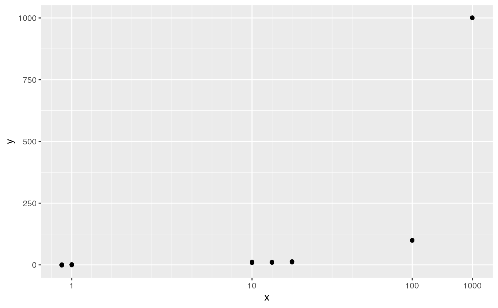

Transformation for continuous data with a finite number of distinct values
Source:R/helper_axis.R
trans_composition.Rdtrans_composition() derives a transformation from a numerical vector with a smaller number (ideally < 30) of distinct values.
The return can be used with function ggplot::scale_x_continuous()
or ggplot::scale_y_continuous() to create a desired axis.
Arguments
- x
A numerical vector used in a plot as (typically)
x- nb
An integer for the maximum number of breaks. Default=30
- brk
One of
A numerical value within
range(x). All values after the value will be spaced equallyNAor a numerical value that is greater than or equal tomax(x). All values will be plotted in the original scaleA numerical value that is smaller than or equal to
max(x). All values will be plotted in equal space
- dab
One of
NA for a value calculated automatically
A number for the distance after
brk
- dgrd
One of
NA for a value calculated automatically
A number for the minimum space between major grids
- dgrd2
One of
NA for a value calculated automatically
A number for the minimum space between major grids
Examples
library(ggplot2)
pdt=data.frame(x=rep(c(0.5, 1, 10,11,12, 100, 1000), each=5))
pdt$y=pdt$x+rnorm(length(pdt$x))
t=trans_composition(pdt$x,brk=50, dab=3)
ggplot(pdt, aes(x=x, y=y))+geom_point()+scale_x_continuous(trans=t)
